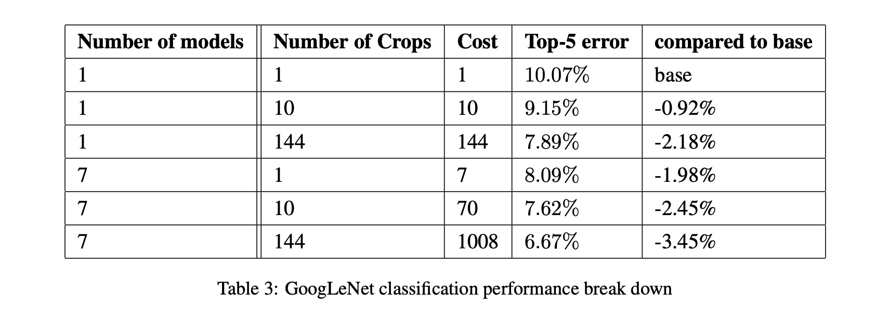

Classification challenge
This paper was written describing the model used in the ILSVRC14 Classification challenge. The task is to classify the validation set of ImageNet (100k images) the most accurately given a model or ensemble of models. The challenge uses the Top-5 error rate for ranking purposes.
They ran 7 independent models and ensembled them for the competition. The results of the ensemble gained about 3% from 40%->43% over a single model.
The table below shows the relative cost and improvements for performing additional aggressive cropping on the inputs:

GoogLeNet final submission lands at 6.67% error rate on Top-5 which is a 40% reduction from the previous year’s winner. All top contenders in 2014 used CNNs projecting their rise in popularity and usefulness.
ILSVRC14 also includes object detection with bounding box predictions. The team used R-CNN which is slow, but allowed them to take the Inception network and use it as the region proposal network. They achieved good results without context modeling or bounding box regression, and believe that better results could have been achieved with those techniques; however, they simply ran out of time.
Conclusions
The key takeaway from this papers is the idea that a sparse network built of dense blocks is a good enough approximation of the sparsity desired from ‘natural’ computation machines which gives significant improvement of results at only a modest increase in compute.